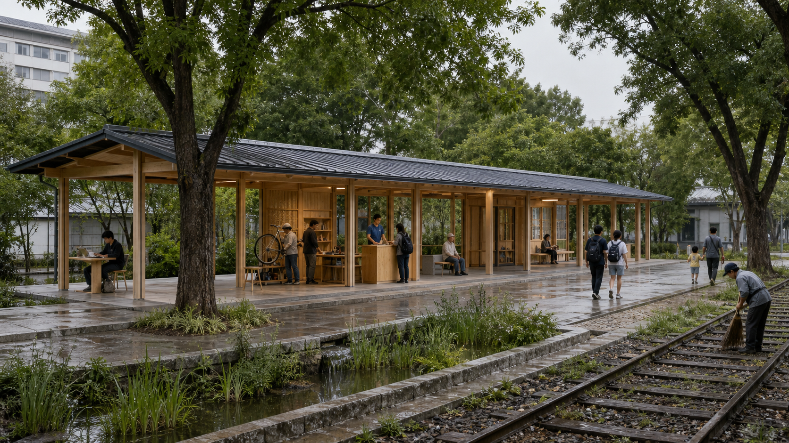
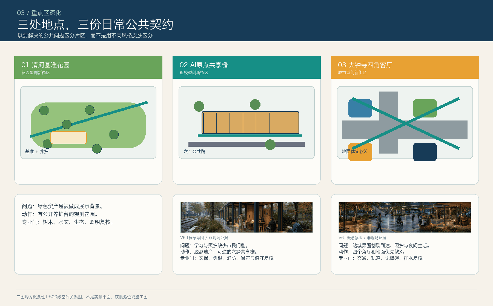
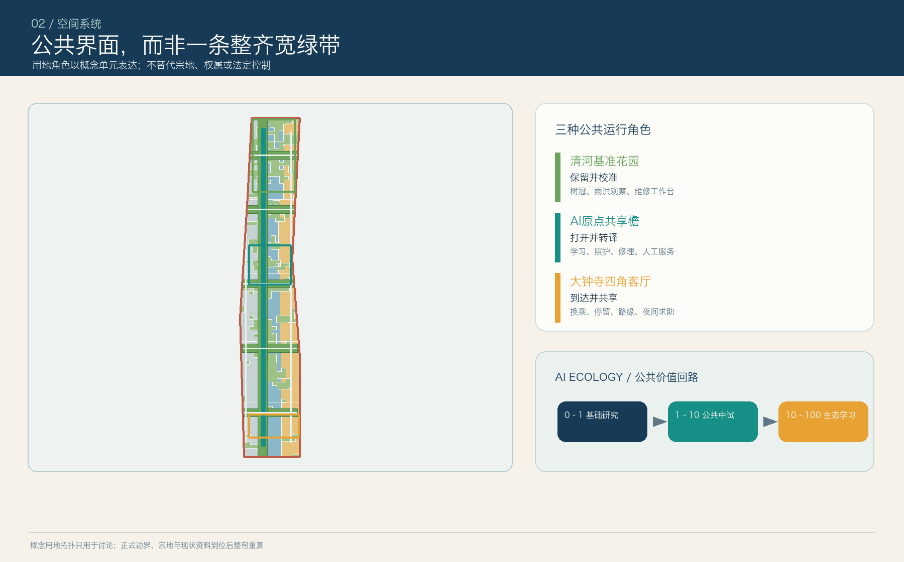
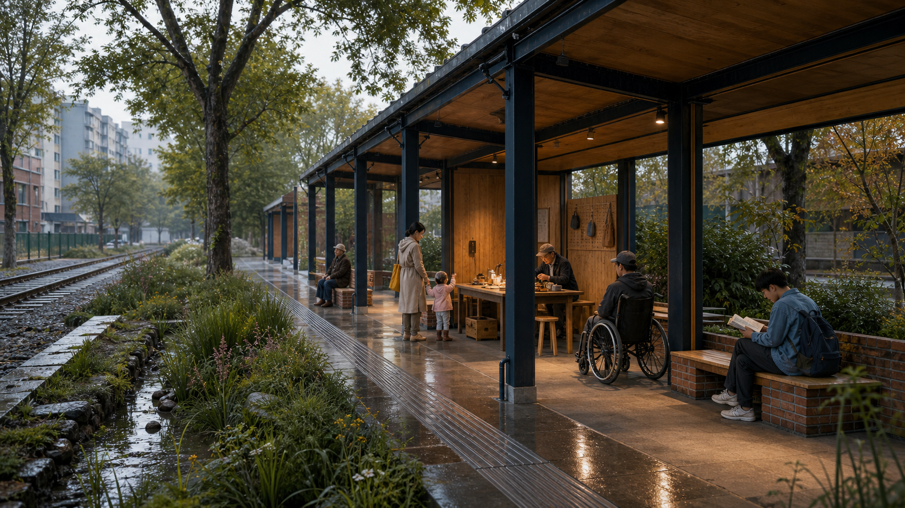
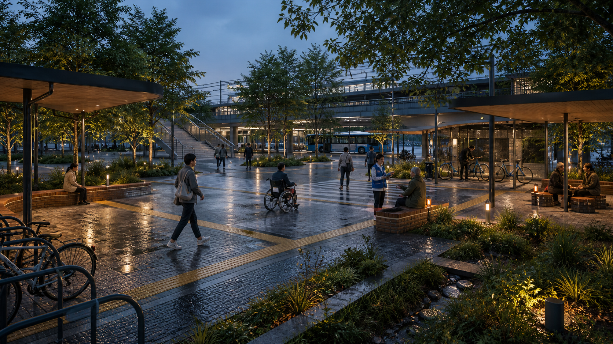
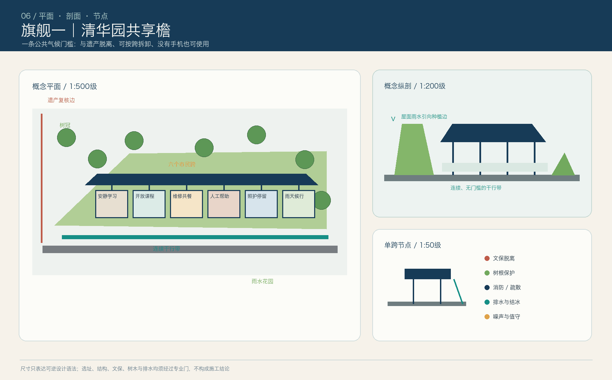
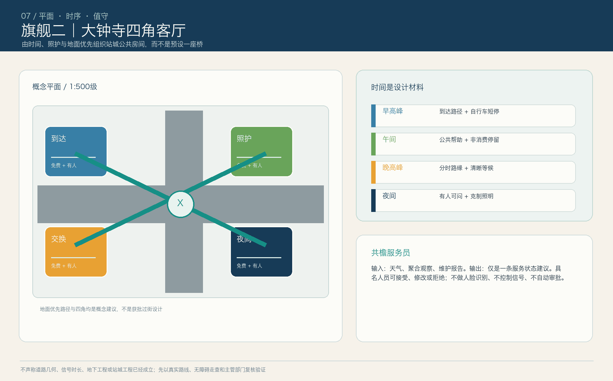

先说清楚这是概念城市设计与开源审查包，不是获批规划。所有红线、工程、权属、树木、交通和控制指标均须以正式资料与专业复核为准。

总览地图与三层范围

总览地图不是另起一张未来城总图
总览地图把用地分区、交通慢行、蓝绿公共空间、建筑公共界面、更新项目与 AI 场景放回同一条公共气候脊，说明公共服务如何嵌入海淀既有更新语境。
一脊 · 五缝 · 三类日常契约协同背景，不替换边界
近期获批控规的“一带一轴、两心多点”只用作区域协同背景。投稿仍以任务书范围与仓库临时几何表达，绝不伪造法定红线或工程落位。
重点区域：三处地点，不同的公共问题


01 清河基准花园
把树木、雨水、养护与公开观察放进一个可维护的花园，而不是把绿色做成展示背景。
02 AI 原点共享檐
以学习、修理、照护、人工帮助和雨天候行为核心，让校城共享先成为一个可用的门槛。
03 大钟寺四角客厅
以到达、照护、交换、夜间四种公共房间处理站城界面；先验证地面，再讨论重工程。
核心指标
两项旗舰：不是雕塑，是城市里的日常完成度



清华园共享檐
问题：学习与照护缺少全天候、非消费、可获得人工帮助的公共门槛。
空间：六个无墙房间、连续干行带、树冠与雨水边；与遗产脱离、可按跨隔离维护。
专业门：文保、树根、消防、排水/结冰、噪声、无障碍和值守。
图中1:500/1:200/1:50只表达类型深化，不是实测落位或工程尺寸。

大钟寺四角客厅
问题：到达、骑行、等候、照护和夜间求助被路口与消费界面割裂。
空间：四个公共角厅与地面优先软 X；早高峰、午间、晚高峰和夜间采用不同服务状态。
专业门：真实路线、逐出口客流、交通/轨道、无障碍、排水和夜间运营。
不声称信号、桥隧、地下工程或站城工程已经获批或可行。
把 AI 画成受限、可重放的公共服务，而不是城市总管
共檐服务员｜离线可演示协议
只生成一条“服务状态建议”；具名值守者接受、修改或拒绝。选择一个情境，查看它应当做什么，也查看它明确不做什么。页面直接使用包内无依赖协议代码；不请求网络、不读取个人数据、不控制设备。
共同停用规则：若无障碍、免费停留、遗产/树木保护、维护能力或人工值守任一失败，缩小或停止试点；设计不以“算法仍在运行”取代公共责任。
CWS-01的协议、夹具、无依赖代码和运行回执均在包内。18/18通过只证明声明的规则一致；它不证明公众接受、现场效果、安全认证、交通工程或运营许可。
空间—气候—证据是一条链


任务覆盖、自检状态、来源与假设
任务覆盖与自检状态
合规矩阵覆盖征集任务与 agent.1—agent.6；标准矩阵和设计深度矩阵对应专业门。本页不替代自检状态：正式提交前，确定性、空间、可视化和专业证据四道门必须全部通过并持久化在 self_check.json。
来源与假设
来源记录在 sources.json，区分正式政策、公开观察、派生计算与概念建议；假设记录在 assumptions.json。临时边界、客流、树木、权属、文保、市政与成本尚待正式资料，取得后须重算所有图层、指标、图纸与展示页。